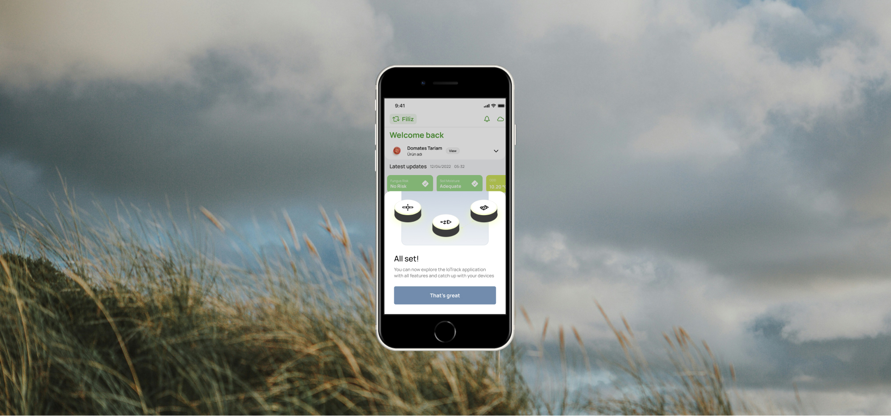

2022-2023
Doktar
UX/UI Designer
Doktar Product Team
Doktar UX Team
Connecting IoT devices through a single-merge app called IoTrack. The service was designed to help farmers and agronomists to evaluate real-time data and analyzed imagery in the fields to make decisions, log activities and get updates on their actions.
Challenge
The application was intented to house and manage two types of devices at the same time: PestTrap and Filiz. Each device having their own types of data (Metereological Sensor and Analyzed Imager) created a need for a structure that would enable easier switching between the devices and their outputs. Creating a multi-service flow was the optimal solution to go given the scale of each of the device's capabilities.
Opportunity
While brainstorming the user flow for checking on their device's status and data, the chance to log and taskify the process of acting betweeen the fields (a real physical place) and the data (on the phone). Making sure the user can track diseases and log the actions taken on the field was a key part of the design process.